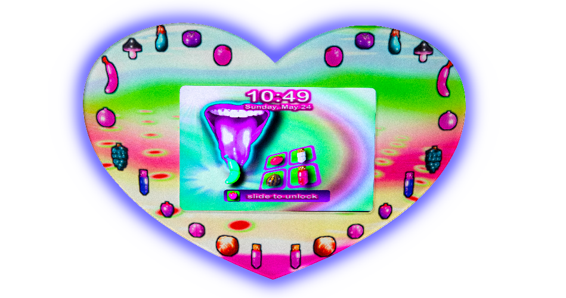
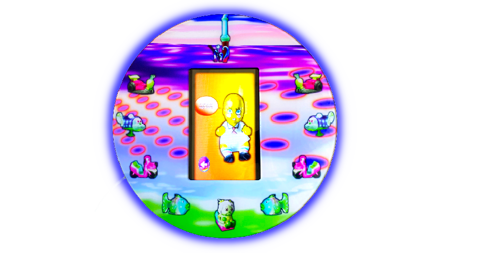

Pao Silva Lizárraga is an illustrator, animator, and artist from Tijuana, Mexico.
Their work depicts cultural imperialism on the internet, melodrama, obsession,
and the border between scary and cute.
about
My work reflects my cultural experience of interacting with America through strip malls and commerce, while living in Tijuana, Mexico. Through web art, paintings, and illustration, I depict the digital and physical advertisements I saw as a border-dweller, promising me the chance to de-Mexicanize. No matter the finished look, I always start with pencil and paper. I use pixels to represent power.
fine art


drawing
web
contact
instagram